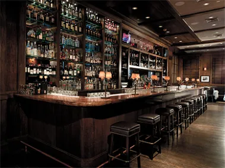

MTVM - Chương 13 (1)

Chương 13
Một buổi sáng tôi xuống ăn sáng và tay người Anh, Harris, đã có mặt bên bàn. Anh ta đang đọc báo bằng cái kính lúp. Anh ta ngước lên và mỉm cười với tôi.
“Chào buổi sáng,” anh ta nói. “Anh có thư đấy. Tôi vừa ghé qua bưu điện và họ đưa nó cho tôi cùng với mấy bức thư của tôi nữa.”
Thư đặt ở chỗ của tôi ở bên bàn ăn, được dựng vào một tách cà phê. Harris quay lại đọc báo. Tôi mở thư. Nó được chuyển tới từ Pamplona. Ngày trên thư đề San Sebastian, Chủ nhật:
Jake mến,
Bọn này tới đây vào thứ Sáu, Brett xỉu ở trên tàu, nên bọn tôi phải nghỉ lại đây 3 ngày cùng với một vài người bạn. Chúng tôi tới khách sạn Montoya Pamplona ngày thứ Ba, tôi không nhớ là lúc mấy giờ. Cậu có thể gửi cho chúng tôi bức điện hướng dẫn chúng tôi cách tham gia với cậu vào thứ Tư không. Cho bọn tôi xin lỗi vì đã lỡ hẹn nhé, nhưng Brett đang hồi phục và sẽ khỏe lại vào thứ Ba. Tôi rất hiểu cô ấy và đang cố gắng chăm nom cô ấy nhưng chẳng dễ tí nào cả. Thương tất cả các cậu.
Michael.
“Hôm nay là thứ mấy ấy nhỉ?” tôi hỏi Harris.
“Thứ Tư, tôi nghĩ thế. Vâng, đúng vậy. Thứ Tư. Thật tuyệt diệu khi mà ta mất đi khái niệm về ngày tháng ở miền núi non này.”
“Vâng. Chúng tôi ở đây gần một tuần rồi đấy.”
“Tôi hi vọng là các bạn không tính tới chuyện rời đi chứ?”
“Vâng. Chúng tôi sẽ đi chuyến xe buýt chiều nay, tôi e là vậy.”
“Thật tiếc. Tôi cứ mong là mình sẽ cùng đi một chuyến nữa xuống dưới sông Irati.”
“Chúng tôi phải tới Pamplona. Chúng tôi đã hẹn bạn ở đó.”
“Tôi thật là xui quá. Chúng mình đã rất vui ở Burguete này.”
“Hãy đi Pamplona cùng chúng tôi. Mình có thể chơi bài ở đó, và ở đấy sắp có lễ hội vui lắm.”
“Tôi cũng muốn thế. Anh thật tử tế khi mời tôi. Nhưng tôi ở lại đây thôi. Tôi không còn nhiều thời gian để câu cá nữa.”
“Anh muốn câu mấy con cá lớn ở sông Irati phỏng.”
“Đúng thế, anh biết đấy. Ở đấy nhiều cá hồi lắm.”
“Tôi cũng muốn được thử thêm một lần nữa.”
“Hãy cứ làm thế đi. Các bạn ở đây thêm một ngày nữa. Hãy là một người anh em tốt đi nào.”
“Chúng tôi thực sự phải đi rồi,” tôi nói.
“Thật tiếc quá.”
Sau bữa sáng Bill và tôi ngồi dưới ánh nắng ấm áp trên một chiếc ghế dài ngay trước cửa nhà nghỉ và bàn bạc. Tôi nhìn thấy một cô gái đi tới từ con đường nơi trung tâm thị trấn. Cô dừng lại trước mặt tôi và lấy một bức điện tín ra khỏi cái túi da đeo bên hông.
“Por ustedes[1]?”
Tôi nhìn bức điện. Địa chỉ đề: “Barnes, Burguete.”
“Vâng. Nó là của tôi.”
Cô lấy ra một quyển sổ và yêu cầu tôi ký tên vào đó, và tôi đưa cô vài đồng xu. Bức điện viết bằng tiếng Tây Ban Nha: “Vengo Jueves Cohn.”
Tôi đưa nó cho Bill.
“Cohn viết gì thế?” anh hỏi.
“Đúng là một bức điện tồi!” tôi nói. “Hắn có thể gửi đi mười từ với cùng một mức giá cơ mà. ‘Tôi đến ngày thứ Năm.’ Nó mang nhiều thông tin quá, nhỉ?”
“Nó đưa ra tất cả những thông tin mà Cohn quan tâm.”
“Dù sao thì tôi cũng về đấy,” tôi nói. “Không cần thiết để đưa Brett với Mike đến đây và quay lại trước lễ hội. Mình có nên trả lời hắn không?”
“Nên chứ,” Bill nói. “Bọn mình đâu cần phải học đòi.”
Chúng tôi đi bộ đến bưu điện và hỏi xin một tờ điện tín.
“Ta sẽ nói sao?” Bill hỏi.
“ ‘Tối nay tới nơi.’ Thế là đủ.”
Chúng tôi trả tiền cho bức điện và quay trở lại nhà nghỉ. Harris ngồi đó và ba chúng tôi đi bộ lên Roncesvalles. Chúng tôi đi vào tu viện.
“Đây quả là một nơi đáng nhớ,” Harris nói, khi chúng tôi đi ra. “Nhưng các anh biết đấy tôi không phải là loại người dành cho nơi như thế này.”
“Tôi cũng vậy,” Bill nói.
“Dù thế, thì đây cũng là nơi đáng nhớ,” Harris nói. “Tôi đã không trông thấy nó. Ngày nào tôi cũng sẽ tới đây.”
“Dù vậy, nó không giống như đi câu, đúng không?” Bill hỏi. Anh thích Harris.
“Tôi sẽ nói là không.”
Chúng tôi đứng trước căn nhà nguyện cũ kỹ của tu viện.
“Có phải ở đằng kia có một quán rượu không nhỉ?” Harris hỏi. “Hay là mắt tôi lại đánh lừa tôi đây?”
“Nó trông giống quán rượu lắm,” Bill nói.
“Với tôi thì rất giống,” tôi đồng tình.
“Tôi bảo này,” Harris nói, “ta hãy tận dụng dịp này đi.” Anh ta nhiễm từ này từ Bill.
Chúng tôi gọi mỗi người một chai rượu. Harris không cho chúng tôi trả tiền.
Anh ta nói tiếng Tây Ban Nha khá tốt, và người chủ quán trọ sẽ không lấy tiền của chúng tôi.
“Nghe này. Các anh không biết việc các anh ở đây có ý nghĩa như thế nào với tôi đâu.”
“Chúng ta đã có một quãng thời gian tuyệt vời, Harris ạ.”
Harris hơi tây tây.
“Tôi nói là. Thực sự các anh không biết nó có ý nghĩa chừng nào đâu. Tôi chưa từng vui như thế kể từ cuộc chiến.”
“Mình sẽ cùng đi câu với nhau nữa mà. Đừng quên đấy nhé, Harris.”
“Phải thế chứ. Mình có kỳ nghỉ vui quá.”
“Làm một chai nữa nhé?”
“Ý hay quá,” Harris nói.
“Lần này là của tôi đấy,” Bill nói. “Nếu không là không uống gì hết.”
“Ước sao anh để tôi trả chầu này. Nó là vinh hạnh của tôi mà, anh biết đấy.”
“Nó mới làm tôi vinh hạnh chứ,” Bill nói.
Người chủ quán mang ra chai rượu thứ tư. Chúng tôi không thay cốc. Harris nâng ly.
“Tôi nói này. Anh biết là dịp này rất đáng để uống mừng.”
Bill vỗ vào lưng anh ta.
“Bạn già Harris.”
“Tôi bảo này. Anh biết tên thật của tôi không phải là Harris. Là Wilson Harris. Đấy là toàn bộ cái tên. Với một dấu gạch ngang, anh biết đấy.”
“Bạn già Wilson-Harris,” Bill nói. “Chúng tôi gọi bạn là Harris bởi vì chúng tôi rất quý bạn.”
“Tôi bảo này, Barnes. Anh không biết điều này có ý nghĩa như thế nào với tôi đâu.”
“Thôi nào mình hãy mừng thêm một ly nữa,” tôi nói.
“Barnes. Thật đấy, Barnes, anh không biết đâu. Thế đó.”
“Uống đi, Harris.”
Chúng tôi quay trở lại con đường từ Roncesvalles với Harris đi giữa hai chúng tôi. Chúng tôi dùng bữa trưa tại nhà nghỉ và Harris đưa chúng tôi ra xe. Anh đưa cho chúng tôi danh thiếp của anh, có địa chỉ ở London và cả câu lạc bộ và địa chỉ văn phòng, và khi chúng tôi ngồi vào chỗ anh đưa chúng tôi mỗi người một chiếc phong bì. Tôi mở phong bì của tôi ra và thấy một tá mồi trong đó. Harris tự tay tết chúng. Anh tự tết toàn bộ số ruồi của anh.
“Nghe tôi nói này, Harris –” tôi bắt đầu.
“Không, không!” anh nói. Anh bước vội xuống xe. “Đấy không phải là ruồi hạng nhất đâu. Tôi chỉ nghĩ rằng nếu anh dùng chúng để câu đôi lúc sẽ nhắc anh nhớ về những kỷ niệm đẹp của chúng ta thôi.”
Xe bắt đầu lăn bánh. Harris đứng trước cửa bưu điện. Anh vẫy tay chào. Khi chúng tôi đi đến cuối đường anh quay lại và trở về nhà nghỉ.
“Nói này, Harris không tử tế sao?” Bill nói.
“Tôi nghĩ anh ta thực sự đã rất vui.”
“Harris? Cậu cho là thế.”
“Tôi ước gì anh ấy đến Pamplona với bọn mình.”
“Anh ấy chỉ muốn câu cá thôi.”
“Ừ. Cậu không thể nói làm cách nào mà một người Anh có thể hòa hợp cùng với những người khác.”
“Tôi cho là không.”
Chúng tôi về Pamplona vào buổi chiều muộn và xe buýt dừng lại ở trước cửa Khách sạn Montoya. Bên ngoài quảng trường họ đang treo đèn dây để thắp sáng nơi này trong mấy ngày lễ hội. Mấy đứa trẻ tiến tới khi xe dừng lại, và một cảnh sát viên ở thị trấn yêu cầu mọi người xuống xe mở túi hành lý ra để kiểm tra ngay trên phần đường dành cho người đi bộ. Chúng tôi bước vào khách sạn và tôi gặp Montoya ngay nơi cầu thang. Ông bắt tay chúng tôi, mỉm cười bối rối theo kiểu của ông.
“Các bạn ông đang ở đây,” ông nói.
“Ông Campbell à?”
“Vâng. Ông Cohn và ông Campbell và Phu nhân Ashley.”
Ông cười như thể tôi đã biết về việc này rồi.
“Họ tới đây khi nào?”
“Ngày hôm qua. Tôi để dành cho ông căn phòng lần trước.”
“Tốt quá. Ông có cho ông Campbell căn phòng nhìn ra quảng trường không?”
“Vâng. Tất cả các phòng đều được chúng tôi kiểm tra kỹ lưỡng.”
“Hiện giờ các bạn tôi ở đâu?”
“Tôi nghĩ là họ đang chơi pelota.”
“Thế còn lũ bò thì sao?”
Montoya mỉm cười. “Tối nay,” ông nói. “Tối nay vào lúc bảy giờ họ sẽ đưa tới lũ bò Villar, và ngày mai là Miura. Tất cả các ông có xuống xem không?”
“Ồ, vâng. Họ chưa bao giờ chứng kiến desencajonada[2] cả.”
Montoya đặt tay lên vai tôi.
“Gặp lại ông ở đó nhé.”
Ông lại mỉm cười. Ông luôn cười như thể đấu bò là một bí mật cực kỳ đặc biệt giữa hai chúng tôi; một bí mật gây sốc nhưng sâu kín mà chỉ mình chúng tôi được biết. Ông luôn cười như thể trong bí mật này có ẩn chứa đôi điều dâm dật đối với người ngoài, nhưng lại là những điều mà chúng tôi có thể biết rõ. Nó không được khơi ra với những kẻ không hiểu được nó.
“Bạn của ông, ông ấy có phải là aficionado không vậy?” Montoya mỉm cười với Bill.
“Vâng. Ông ấy đến từ New York để tham dự San Fermin đấy.”
“Vâng?” Montoya tỏ ra không tin một cách lịch sự. “Nhưng ông ấy không phải là aficionado giống như ông.”
Ông bối rối đặt tay lên vai tôi.
“Vâng,” tôi nói. “Anh ấy là một aficionado thực sự.”
“Nhưng mà không giống ông đâu.”
Aficion có nghĩa là đam mê. Một aficionado là một người đam mê môn đấu bò. Tất cả những đấu sĩ có hạng đều ngụ tại khách sạn của Montoya; vì thế, những người có aficion cũng sẽ ở lại đây. Các đấu sĩ chạy theo thương mại cũng từng ở đây, có thể là vậy, nhưng họ không hề quay trở lại. Những tay cừ thì quay lại mỗi năm. Trong phòng của Montoya treo đầy ảnh họ. Những bức ảnh được đề tặng riêng cho Juanito Montoya hoặc chị gái ông. Ảnh của những đấu sĩ mà Montoya tin tưởng thì được lồng khung. Ảnh của những đấu sĩ mà thiếu aficion thì Montoya cất vào ngăn kéo. Chúng thường có những lời đề tặng hoa mỹ nhất. Nhưng chúng chẳng có ý nghĩa gì cả. Một ngày nọ Montoya lôi hết chúng ra và vứt vào sọt rác. Ông không muốn có chúng ở bên.
Chúng tôi vẫn thường nói về bò và các trận đấu bò. Tôi đã ở lại chỗ của Montoya trong nhiều năm. Chúng tôi chưa bao giờ nói chuyện lâu mỗi lần chạm mặt. Nó chỉ đơn giản là sự hài lòng khi phát hiện ra những gì mà mỗi chúng tôi cảm nhận. Nhiều người đến từ những vùng miền xa xôi và trước khi rời Pamplona họ ghé lại và trao đổi vài phút với Montoya về lũ bò. Những người đó là những aficionado. Những tay aficionado luôn có thể có được một phòng cho dù khách sạn đã chật kín. Montoya giới thiệu tôi với vài người trong số họ. Lúc ban đầu họ luôn rất lịch sự, và việc tôi là một người Mỹ khiến cho họ cảm thấy khôi hài. Dù sao thì người ta cũng quan niệm rằng người Mỹ không thể có aficion. Anh ta có thể giả vờ với thứ đó hoặc nhầm lẫn nó với niềm hưng phấn, nhưng anh ta không thể thực sự có được nó. Khi họ thấy rằng tôi có aficion, và không có ẩn ý nào trong đó cả, không có câu hỏi cụ thể nào có thể làm cho rõ, thay vì thế nó như là một loại kiểm nghiệm tinh thần bằng ngôn từ với những câu hỏi luôn mang một chút thận trọng và không bao giờ rõ ràng, cũng là sự ngại ngùng như vậy khi đặt bàn tay lên một bờ vai, hoặc là một lời cảm thán “Buen hombre[3].” Nhưng gần như luôn là một sự động chạm thật sự. Cứ như thể họ muốn chạm vào anh để biết chắc rằng điều đó là sự thật.
Montoya có thể tha thứ bất cứ điều gì cho những đấu sĩ có aficion. Ông có thể tha thứ cho những cuộc tấn công của trạng thái kích động, hay hốt hoảng, và cả những hành vi xấu không thể giải thích nổi, cũng như mọi lối trụy lạc. Đối với những kẻ có aficion ông có thể tha thứ bất cứ điều gì. Ngay lập tức ông tha thứ cho tôi về những người bạn của mình. Ông không bao giờ nói ra một lời nào cả, chúng chỉ đơn giản là những xấu hổ nho nhỏ giữa chúng tôi, như là miệng vết thương mở của con ngựa trong một trận đấu bò.
Bill đã đi lên lầu và khi tôi bước vào, tôi thấy anh đang tắm và thay đồ trong phòng.
“Ồ,” anh nói, “cậu nói nhiều tiếng Tây Ban Nha không?”
“Ông ấy bảo lũ bò sẽ được chở tới đây vào buổi tối.”
“Mình đi xuống tìm đồng bọn thôi.”
“Được rồi. Có thể họ đang ở quán café.”
“Cậu mua vé chưa?”
“Rồi. Tôi có tất cả rồi đây.”
“Nó như thế nào?” Anh đang sờ má mình trong gương, nhìn kỹ để kiểm tra xem còn có phần râu nào chưa cạo nơi dưới cằm không.
“Khá hay,” tôi nói. “Họ thả bò ra khỏi chuồng cùng một lúc, và họ có trâu đực non trong bãi quây để đón và giữ cho chúng khỏi tấn công lẫn nhau, và lũ bò lao vào bọn trâu non và đám trâu non chạy quanh như mấy cô hầu gái trong khi cố gắng làm chúng yên.”
“Chúng có bao giờ húc mấy con trâu non không?”
“Có chứ. Đôi khi chúng làm ngay và giết mấy con trâu.”
“Bọn trâu không làm gì hết à?”
“Không. Chúng cố gắng đánh bạn với lũ bò.”
“Họ cần chúng vào làm gì?”
“Để làm yên lũ bò và ngăn chúng khỏi làm gãy sừng khi húc vào tường đá, hoặc là vì húc vào nhau.”
“Làm một con trâu đực non chắc là thú lắm.”
Chúng tôi bước xuống lầu và ra khỏi cửa và đi qua quảng trường tới quán café Iruña. Chỉ có hai phòng bán vé cô độc được dựng lên nơi quảng trường. Ở trên các ô cửa, có viết SOL, SOL Y SOMBRA và SOMBRA[4], đều đóng lại. Chúng sẽ không được mở cho tới ngày trước lễ hội.
[1] Tiếng Tây Ban Nha trong nguyên bản: Của ông à?
[2] Tiếng Tây Ban Nha trong nguyên bản: lễ thả bò
[3] Tiếng Tây Ban Nha trong nguyên bản: Anh chàng cừ
[4] SOL, SOL Y SOMBRA và SOMBRA: (tiếng TBN) MẶT TRỜI, MẶT TRỜI VÀ BÓNG RÂM và BÓNG RÂM. Các chỗ ngồi xem đấu bò có giá vé khác nhau dựa trên vị trí của chúng ở giữa nắng, trong bóng râm hoặc cả hai. Rẻ nhất là chỗ ngồi dưới nắng, và chỗ ngồi trong bóng râm (có mái che) là đắt nhất.
Comments